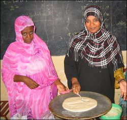
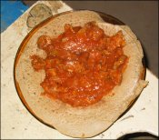

Skip ahead to:
A Journey in Sudanese Cooking
Food is an essential part of our day and one of the few things we need to survive. It ranks among the ancient greats of Air, Clothing and Shelter. These things don’t have to be bare essentials—they can be enjoyed. In this column, I won’t delve into fashion or architecture; I’ll delve into food. And I’ll endeavour to steer clear of extravagance, or suggest (like your typical column in a glossy magazine) that you use ingredients only found in France or Morocco.
I love food and I love cooking, but more than that, I love what comes with it: the art of hospitality. With each issue, I’ll give you a taste of how a different culture enjoys food and hospitality, and I’ll include some recipes to try at home. My mother always used to say, “Anyone who can read can cook.” That goes for guys too!
Having recently been to Sudan, it would only be appropriate to share a recipe from that part of the world. Communal eating in Sudan is the done thing. Food is usually served on a big, round tray with many separate dishes on it. You seldom eat with a knife and fork. Instead, you scoop everything up with an airy round loaf of bread (or, in this case, Gorraasa, a flat bread) which you break into sizeable pieces to handle your food. You can eat a whole meal like this without getting your hands dirty!
I regret never writing down any of the local recipes, but luckily another Kiwi who was there last year did a good job of that. These recipes are courtesy of Mark Tanner, from www.marktanner.com. The site is well worth a visit for more Sudanese recipes.
The recipe above is just one for you to try. It does not, of course, reflect the vast range of Sudanese cooking. Have a go, and eat it with the bread and your fingers—don’t be tempted to use a knife and fork!
Gorraasa be Dama (Meat Sauce)
- 6 onions
- 4 tbsp tomato paste
- 1/4 cup oil
- 3 cloves crushed garlic
- 250 g beef steak
- 2 cups water
- 3 tomatoes
- half a green pepper
- 1 tsp salt
- 1 tsp cardamom
- 1 tsp cinnamon
Chop onions, put in pot and fry in oil at medium heat. Keep covered, stirring occasionally. Add water and cover. Leave on medium heat for 5-10 minutes until water is almost evaporated. Lightly blend onions and return to pot, then add chopped tomatoes.
Chop steak into small pieces and add to pot. Add chopped pepper, salt, cardamom and cinnamon. Cover and leave for 3 minutes. Add tomato paste and stir, adding water until smooth. Cover and leave to simmer for 10 minutes, adding more water occasionally. Stir in crushed garlic.
Pour over Gorraasa and serve warm.
Gorraasa (Bread)
- 500 g wheat flour
- 1/2 tsp baking powder
- 500 ml water
- 1 tsp salt
Sift flour into bowl. Add baking powder and salt and stir in water until thick batter forms.
Pour ladle full of batter onto flat, non-stick frying pan and flatten out until evenly spread. Fry at medium heat and flip when golden on one side.